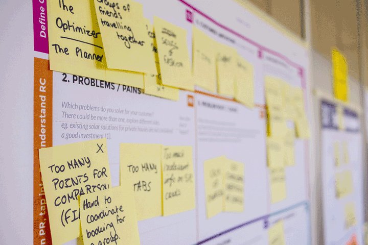
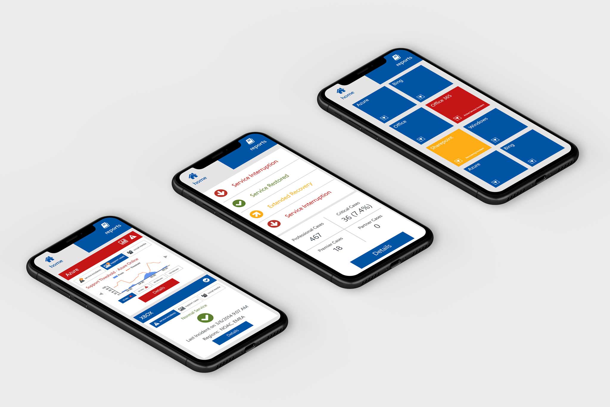
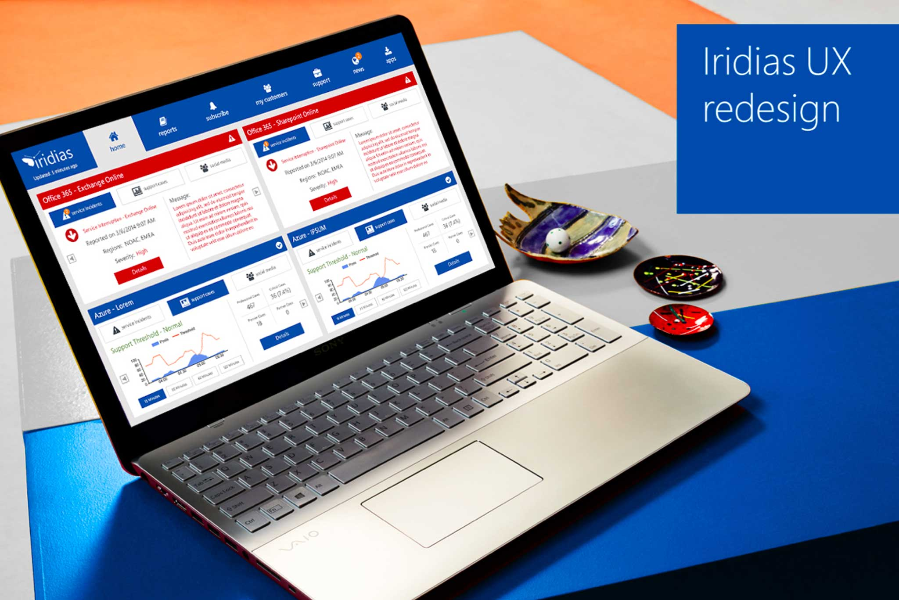

User Research

I actively participated in targeted user research with Microsoft employees around the world. Through video conferencing and face to face interviews, I was able to attain the necessary information to make the UX redesign happen.
UX Design and Mockups

I took point on the entire UX redesign. I did all the mockups and prepared visual representations of work done to use during my presentations.
Presentation

I used visual representations to present my prototyping methods and designs to stakeholders on the Microsoft campus. Through public speaking, I was able to convey the rhetoric of the UX redesign.